Explore Peschiera del Garda
A Brief History
Peschiera del Garda stands where the Mincio leaves Lake Garda, a choke point fortified by Scaligeri, Venetians, and especially the Habsburg Quadrilatero after the Congress of Vienna. Bastions, canals, and barracks turned the town into a garrison guarding routes between Milan and the Tyrol. Unification battles in 1859 and later lakeside tourism reshaped the ramparts, but star-shaped walls and harbour quays still record how military planners treated this waterside crossing.
Attractions Map
Top Sights & Activities
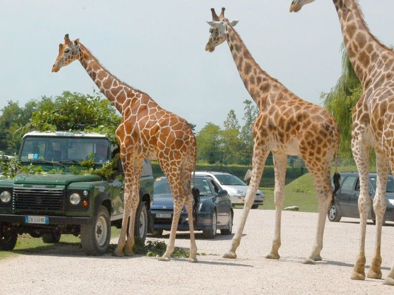
Parco Natura Viva
Parco Natura Viva, located between Pastrengo and Bussolengo near Lazise, offers a unique experience with its Auto-Safari Park where travellers can drive through and observe lions, tigers, monkeys, and various bird species. The park also features a zoo housing a wide variety of animals and an impressive dinosaur park with life-sized replicas.
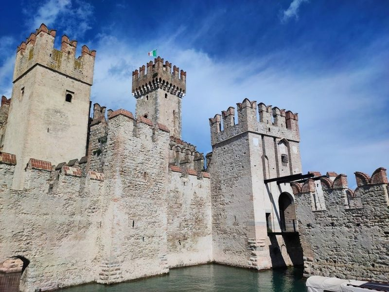
Castello Scaligero di Sirmione
Castello Scaligero di Sirmione is a unique 13th-century castle located at the entrance of Sirmione, surrounded by water and offering views of the lake. Originally built for defense, it now houses historical artifacts and exhibitions that provide insight into Sirmione's rich history. The castle features three entrance doors, three towers, and a keep with an impressive height of 47 meters.
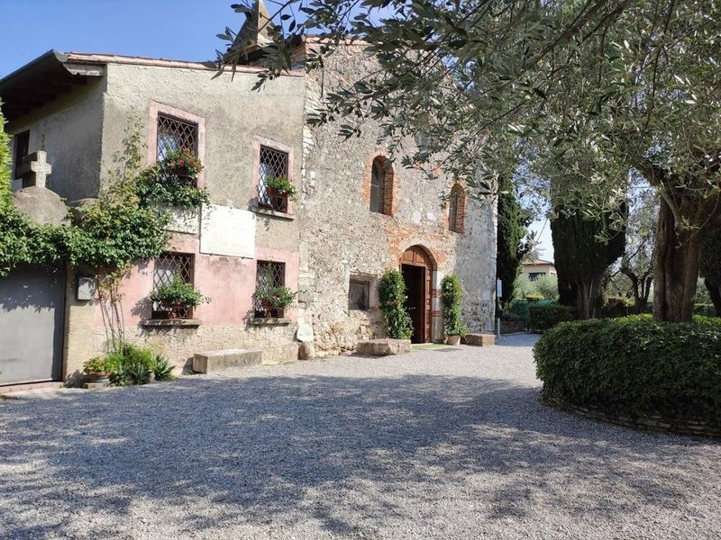
Chiesa di San Pietro in Mavino
Chiesa di San Pietro in Mavino is a medieval stone church located on Mavino hill, the oldest church in Sirmione dating back to the 8th century A.D. Surrounded by gardens, cypresses, and olive trees, it offers an atmosphere of peace and silence despite its proximity to the busy historic town center. The church is known for its frescoes and bell tower and is situated near the Grottoes of Catullus.
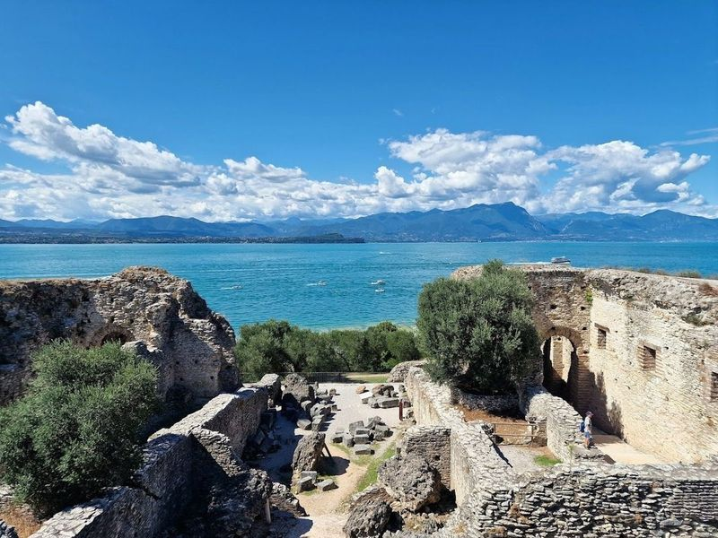
Grotte di Catullo e Museo Archeologico di Sirmione
The Archaeological site of Grotte di Catullo, located on the Sirmione peninsula in northern Italy, is a significant Roman villa dating back to the 1st century BC. Despite its name, it's not a cave but rather the remains of a grand Roman domus. While traditionally associated with the poet Catullus, there's uncertainty about this claim.
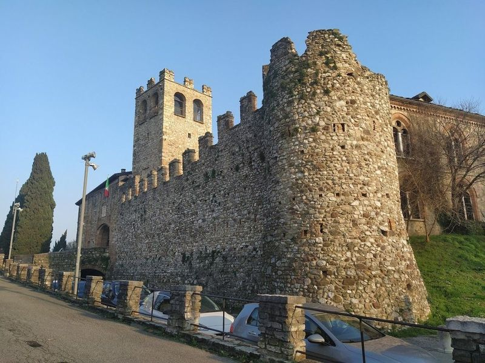
Castello di Desenzano del Garda
Castello di Desenzano del Garda is a majestic stone fortress situated atop a hill, offering panoramic views of the surrounding landscape. Originally constructed as a refuge from Barbarian invasions, this imposing castle has managed to withstand the test of time and stands in excellent condition today. travellers can climb up the tower for just three euros per person to enjoy vistas of the area.
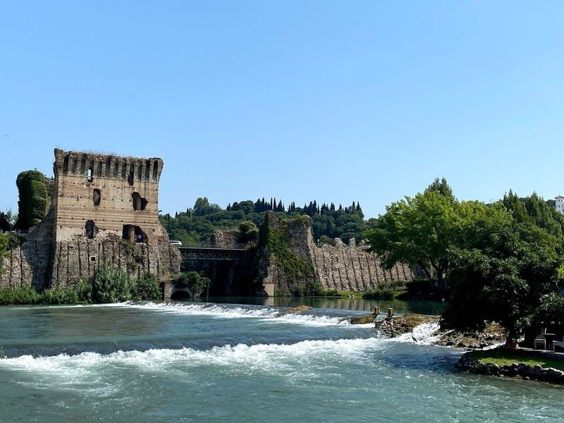
Ponte Visconteo
Ponte Visconteo, a venerable bridge completed in 1395 and restored over the years, stands as a town landmark. The oldest part of the village still retains its medieval charm, highlighted by the presence of the bell tower, water mill wheels used for grinding wheat and cereals in the past, and the fortifications of Ponte Visconteo.
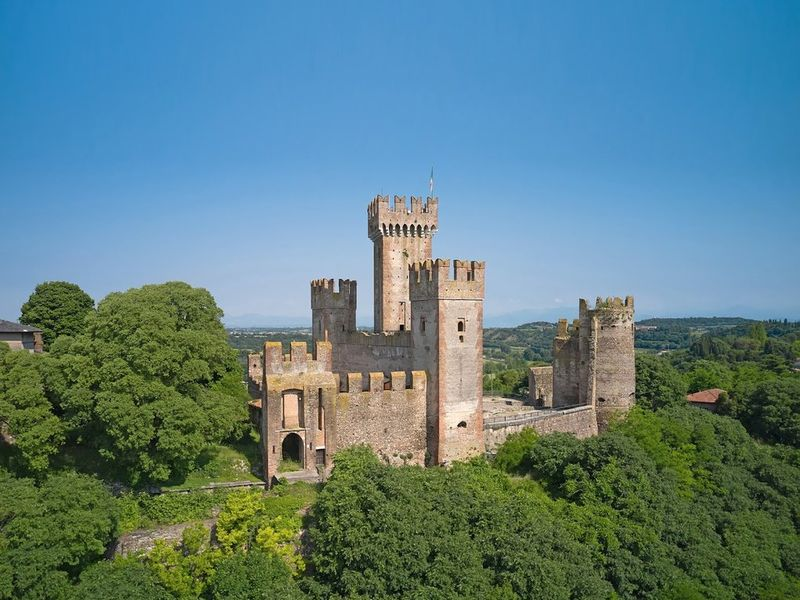
Castello Scaligero di Valeggio sul Mincio
Castello Scaligero di Valeggio sul Mincio is a historical castle located on top of a hill behind Borghetto. The typical dish in this area is the Tortellino di Valeggio, a thin golden pastry filled with fragrant braised meat, handmade according to tradition. Another must-try is the Torta delle Rose, a soft cake made with leavened dough rich in butter and sugar, rolled and arranged in the shape of rosebuds.
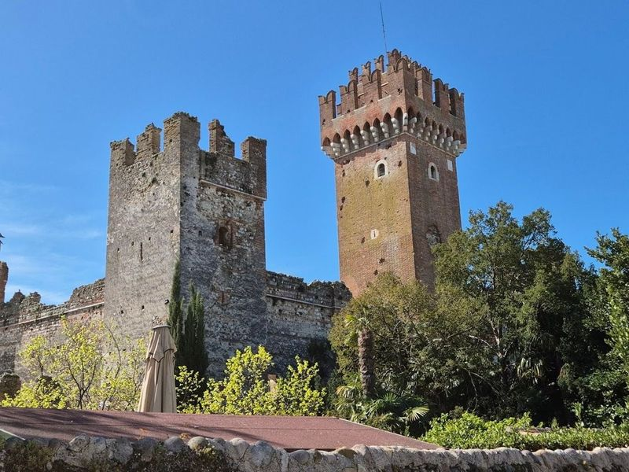
Castello Scaligero di Lazise
Castello Scaligero di Lazise is a small medieval castle located in a picturesque lakeside village. The castle, with its six towers and battlements, was reconstructed in the 13th century by the Scaligers. It boasts a park surrounding it and offers scenic views of the lake. While it is privately owned and can only be admired from the outside, travellers can still appreciate its historical significance and take leisurely walks around the area.
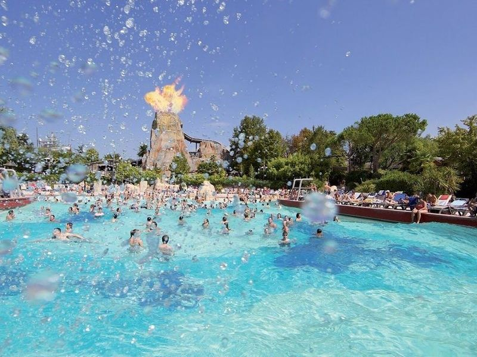
Caneva Aquapark
Caneva Aquapark, situated in Lazise, is a family-friendly waterpark offering an array of attractions such as tube and chute rides, a lazy river, adult pool, and dining options. As Europe's first themed water park, it provides a tropical island ambiance with captivating music, tropical flora, and white sandy beaches. travellers can enjoy crystal-clear lagoons for swimming and slides reaching up to thirty meters high.
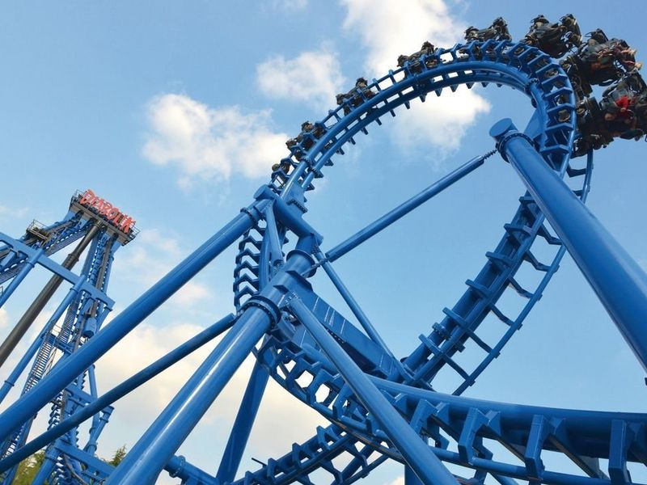
Movieland Studios
Movieland Studios is a family-friendly amusement park located in Lazise, Verona. It's part of the CanevaWorld Resort and features movie-themed rides, attractions, and entertainment. The park offers an immersive experience with American-style film sets where travellers can watch actions performed by professional stuntmen.
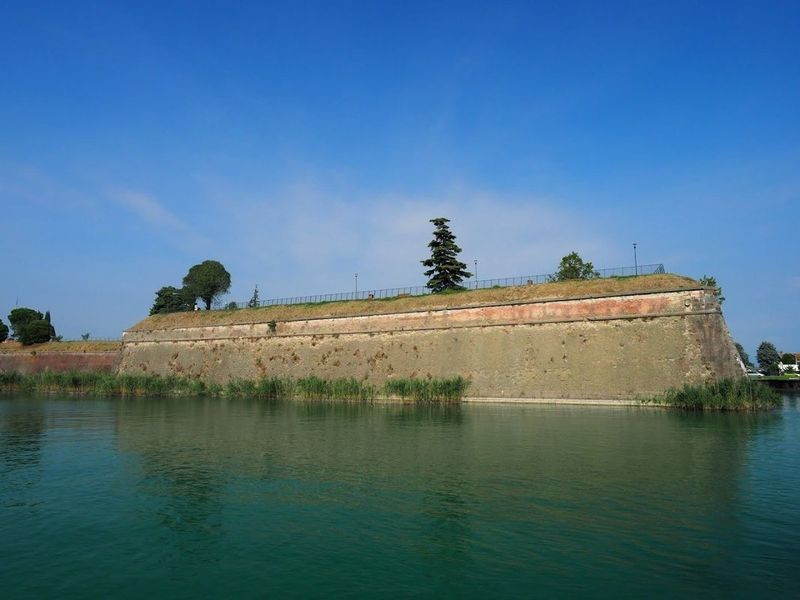
Porta Verona
Porta Verona is a historic gate that serves as the main entrance to the old town of Peschiera del Garda. It was built in 1551 and is part of the fortified walls. Nearby, travellers can explore the Porta Verona Artillery Barracks, which were constructed between 1854 and 1857 and have been meticulously restored. The barracks feature yellow and red colors symbolizing Italian and Austrian artillery.
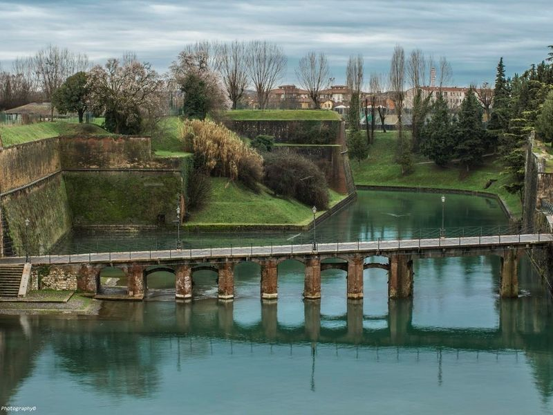
Porta Brescia
The Porta Brescia fortress is a historic stone gatehouse located within the city's walls, serving as an entrance to the old town. Alongside it stands a war monument exhibiting cannons and weaponry. It's a fascinating place to visit, where one can witness historical artifacts rather than glorifying wars that have ravaged the world. The location offers excellent food, service at fair prices, making it worth spending money on.
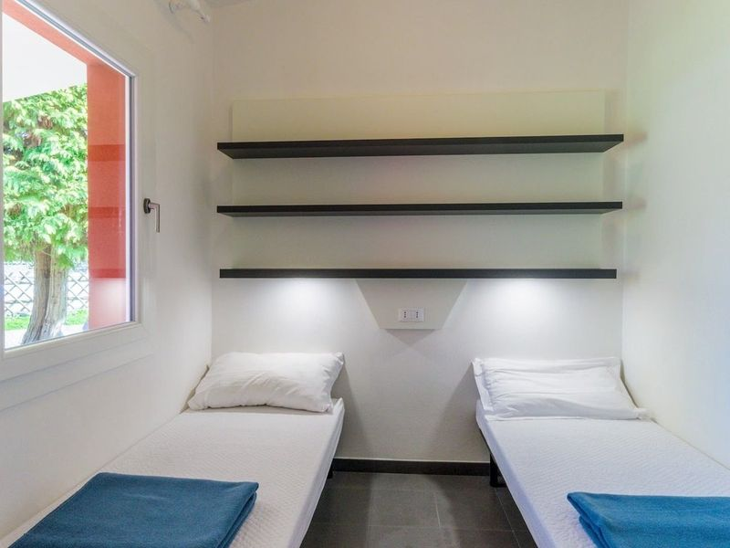
Del Garda Village and Camping
Del Garda Village and Camping is a lovely family-friendly camping ground on the shores of Lake Garda. The campsites are situated in a peaceful and location, with access to four pools with slides, table tennis, football and more. The staff are very friendly and helpful, but they could improve the cleanliness of their facilities.
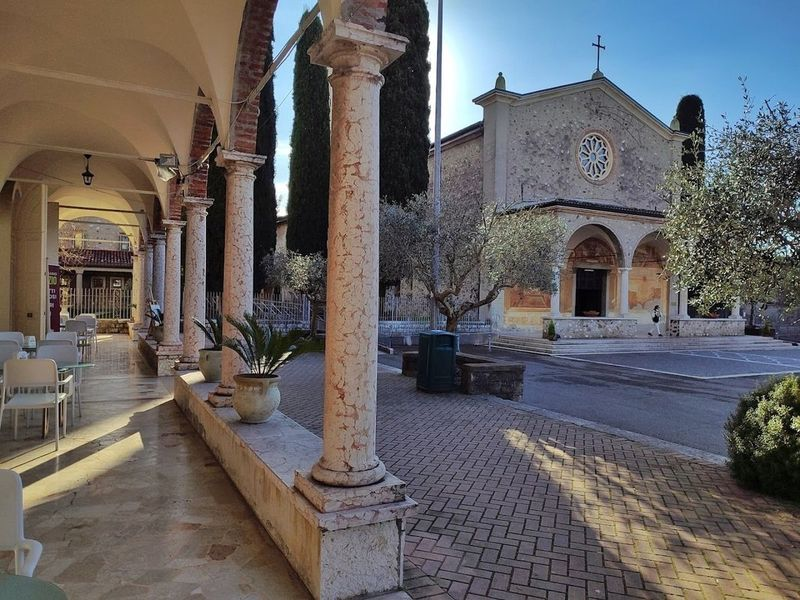
Santuario della Madonna del Frassino
The Madonna del Frassino Sanctuary, dating back to the 16th century, is a significant pilgrimage site in Peschiera del Garda. It features two chapels, a convent, and presbytery adorned with remarkable artworks. The sanctuary holds historical and religious importance as it is believed to be built at the spot where a farmer encountered a perilous snake but was miraculously saved by the intervention of Madonna.
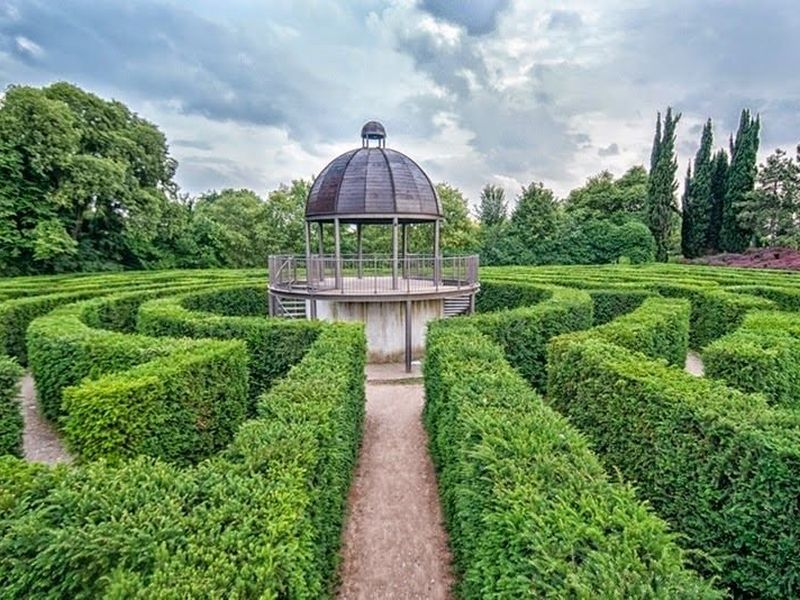
Parco Giardino Sigurtà
Parco Giardino Sigurtà is a natural masterpiece that captivates travellers with its serene beauty. near the historic center of Valeggio sul Mincio, this expansive park spans over 60 hectares and is recognized as gardens in Italy and Europe. It features lush green lawns, flower gardens, and ancient trees that create an enchanting atmosphere.
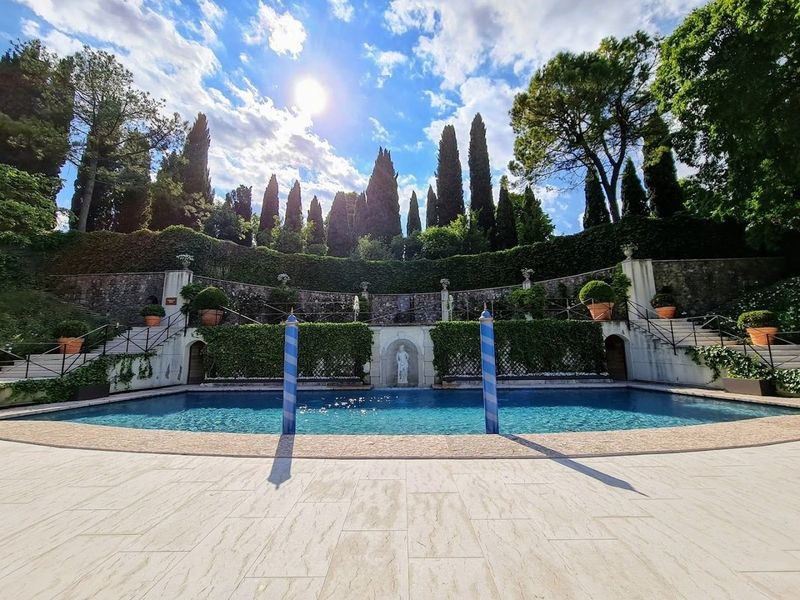
Villa Sigurtà
Villa Sigurtà, located in Valeggio sul Mincio, Verona, is a 17th-century villa built on the grounds of a 15th-century property. The villa is privately owned and still inhabited, maintaining its original furnishings and frescoes. travellers can explore the gardens with picturesque trails for leisurely walks. The park offers a setting for sightseeing and recreational activities with family or friends.
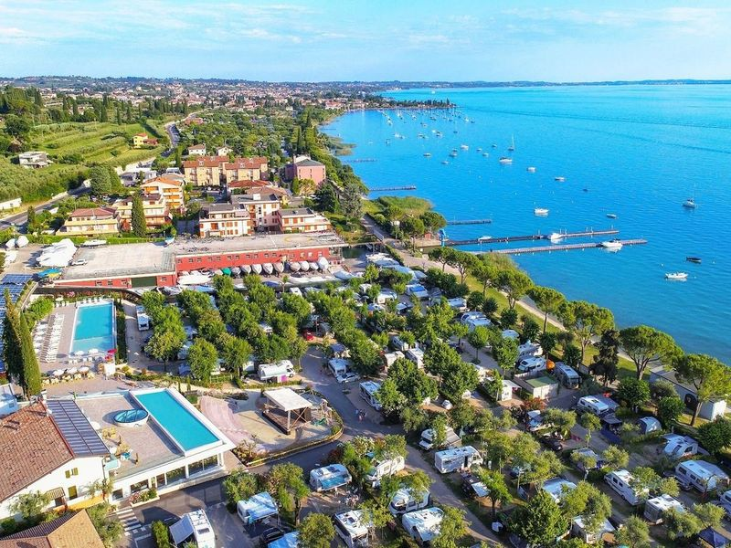
La Rocca Camping Village
La Rocca Camping Village is a lakeside campground that offers both pitches and rentals. It boasts a restaurant, a heated pool with a bar, and is situated near the Garda lake. The accommodations are well-equipped with amenities such as a kitchen, bathroom, washing machine, and comfortable bed. Guests receive a welcome kit which includes some kitchen cleaning supplies.
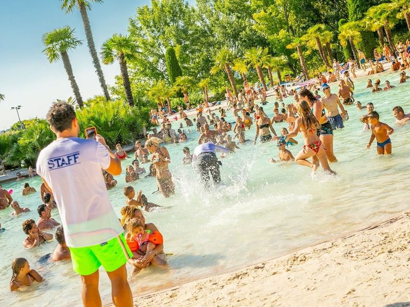
Parco Cavour
Parco Cavour is a large waterpark with a variety of attractions for travellers of all ages. The park features fun slides, suspended walkways, and areas dedicated to wellness and relaxation. It offers different sections tailored to various age groups, such as Paradise Island for small children and Robinson's Beach for slightly older kids. For those seeking thrills, the Iceberg and Kamikaze slides are popular choices, while Palm Beach provides a more laid-back atmosphere.
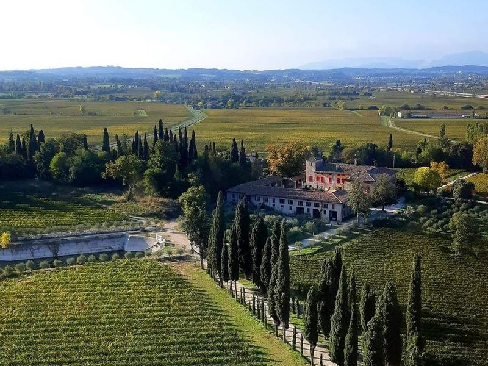
Tower of San Martino della Battaglia
The Weekly Market in Desenzano Del Garda is a and bustling experience that stretches for miles, offering an impressive array of stalls filled with local treasures. As stroll through this lively market, find everything from fresh fruits and vegetables to artisanal cheeses, making it a paradise for food lovers. The atmosphere is electric, especially on weekends when the crowds flock to enjoy the sights and sounds by the picturesque lakeside.